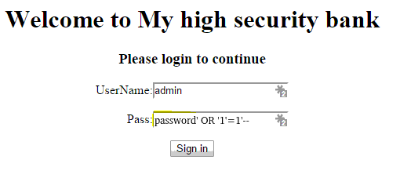
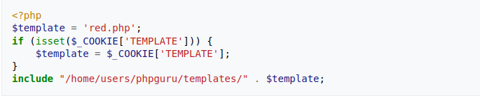

Last Updated on April 12th, 2022 | Home
Web Application Vulnerabilities
 A web application vulnerability is a misconfiguration, software code flaw, bug or some other weakness in a web application
or its components and processes. These vulnerabilities enable attackers to gain unauthorized access to systems,
processes or even mission critical assets of an organization. With such access an attacker can takeover applications,
engage in privilege escalation to exfiltrate data, orchestrate attacks or even cause large-scale service disruption and
much more.
A web application vulnerability is a misconfiguration, software code flaw, bug or some other weakness in a web application
or its components and processes. These vulnerabilities enable attackers to gain unauthorized access to systems,
processes or even mission critical assets of an organization. With such access an attacker can takeover applications,
engage in privilege escalation to exfiltrate data, orchestrate attacks or even cause large-scale service disruption and
much more.
The aim of this write-up is to give concise explanation with practical and easy to understand examples of known vulnerabilities that plague web applications; so as to expose technological inclined enthusiasts, especially newbies in penetration testing to these vulnerabilities.
Sections:
- SERVER SIDE VULNERABILITIES- CLIENT SIDE VULNERABILITIES
- ADVANCED TOPICS (OTHERS)
SERVER SIDE VULNERABILITIES
In a client-server model, a server-side refers to programs and operations that run on the server. Typically a server is a computer application, such as a web server, that runs on a remote computer that is reachable from a user's local computer, smartphone or other devices. As the name implies server side vulnerabilities are therefore flaws present in the server-side of a client-server model that can be exploited by attackers. Server side vulnerabilities known to web applications include:- SQL Injection
- Authentication
- Directory Traversal
- (OS) Command Injection
- Business Logic Vulnerabilities
- Information Disclosure
- Access Control Vulnerabilities
- File Upload Vulnerabilities
- Server-side Request Forgery (SSRF)
- XML External Entity (XXE) Injection
-SQL Injection
SQL Injection is a type of vulnerability that allows an attacker to interfere with the queries that an application makes to its database, allowing the attacker to interact with data they are not normally able to retrieve. It involves placement of malicious code in SQL statements, via web page input; this can result in unauthorized access to sensitive data such as passwords, personal user information or credit card details. In many cases, an attacker can modify or delete this data, causing damage to changes to the application's content or behavior and in some situations an attacker can escalate an SQL Injection attack to compromise the underliying server or other back-end infrastructure.Identifying the attack surface
SQL Injection are found potentially in areas of a web application where user input is used directly in an SQL query to interact with the database. This could be areas such a login form or the search functionality of a web application.
Example:
 This is a simple form of sql injection. During login the vulnerable application makes the following sql query to its database...
select username,pass from users where username='[user_input]' and password='[user_input]'select username,pass from users where username='admin' and password='password' OR '1'='1'---Authentication
Authentication is the process of verifying the identify of a given user or client. In short, it involves making sure that ehy really are who they claim to be before given access to a particular resource. Robust authentication mechanisms are an integral aspect of effective web security as websites are in part exposed to anyone who is connected to the internet by design. Authentication in web applications can be categorized into three categories:- Something you know; like a password or security question
- Something you have; such as a security token
- Something you are or do; this can be your biometrics such as your fingerprint
- User Enumeration: This is probably the most common authentication vulnerability. It is also usually one of the quickest and easiest to prevent. It is mainly due to different error messages being presented back to the end user when an invalid user attempts to authenticate with the application compared to that of an attempt made by a valid user.
- Weak Password Policy: This happens when a web application allows its users to set weak passwords, as a password's strength is a measure of the effectiveness it provides in resisting guessing and brute-force attacks.
- Non-implemented Brute-Force Protection: A common attack against authentication pages is brute-force attack. A brute-force attack for example, is when an attacker attempts multiple usernames and passwords until they obtain access to a valid account. This type of attack is easier to perform if the application has a user enumeration or weak password policy. An application is prone to this attack when it fails to protect itself from it through methods such as implementing a strict IP-based user rate limiter.
Others include broken password reset systems, lack of additional security measures such as Two-Factor Authentication(2FA) and much more.
-Directory Traversal
Directory traversal, also known as file path traversal is a vulnerability that allows an attacker to read arbitrary files on the server. This might include application code, data, crednetials for back-end systems, and sensitive operating system files. Directory traversal is casued by insufficient security validation or sanitization of user-supplied file names, such that the supplied characters allows the attacker to break out of the web server's root directory and access other locations through the operating system's file system API.Identifying the attack surface
As the name suggest directory traversal vulnerabilities are found in areas of a web application where files contained on the server's file system are accessed in way or the other and are user-controllable.
Example:  What this php code does is that by default it returns a file in the templates directory called "red.php". But it also checks to determine if the
"COOKIE" header of the request that was made to the server has a
TEMPLATE field. If it does the $template variable is automatically set to the passed value. The variable is then concatenated to the intended file path. Because no proper checks (such as blacklisting)
or input validation is performed on the data returned by the TEMPLATE field of the COOKIE header, an attack against the system could be to send the following HTTP request...
GET /default.php HTTP/1.0
Cookie: TEMPLATE=../../../../../etc/passwd-(OS) Command Injection
OS Command Injection is an attack that involves executing arbitrary commands on a host operating system. Unlike code injection which involves injection of code interpreted or executed by the application, for instance injecting php code into an application; command injection involves executing commands in a system shell or other parts of the environment. Here the attacker extends the default functionality of a vulnerable application causing it to pass commands to the system shell.Identifying the attack surface
Command Injection are found in areas of the application that invoke external commands, i.e any command that is not part of the application and is therefore external to the application. Any of the following scenarios can cause command injection vulnerabilities:
- The application invokes a system shell to execute an external command and passes untrusted data as an argument to the external command.
- The application uses untrusted data to determine which external command to execute
- The application passes untrusted data to an external command, and the external command will invoke additional commands based on untrusted data.
file query that is passed to the /logs endpoint. This value is then used in the exec function
to execute the command; git log --oneline ${file}. Since there is no proper validation or authorization checks done during the process, an attacker can perform command
injection by simply making the following request...
https://[domain]/logs?file=[filename];[command]-Business Logic Vulnerabilities
Business logic vulnerabilities are flaws in the design and implementation of an application that allows an attacker to elicit unintended behavior. It involves ways of manipulating a legitimate functionality or processing flow of an application so as to achieve a malicious goal. These flaws are generally the result of failing to anticipate and handle safely unusual application states that may occur. Commonly referred to as Logic flaws they are often invisible to people who aren't explicitly looking for them as they typically won't be exposed by the normal use of the application. The attacker, however may be able to exploit behavioral quirks by interacting with the application in ways that developers never intended.Identifying the attack surface
Business logic vulnerabilities typically cannot be scanned for as this type of vulnerability is different from other types of vulnerability, which makes it difficult to apply any kind of categorization scheme because it varies depending on the business domain that the application serves. You need to properly understand the intended purpose and the business logic of the application to be able to spot the logic flaws when testing the application.
Example:
 The products shown in the image can be bought from a shopping application which has a business logic flaw. This allows as an attacker to purchase the first product (Leather Jacket)
which costs
The products shown in the image can be bought from a shopping application which has a business logic flaw. This allows as an attacker to purchase the first product (Leather Jacket)
which costs $1337.00 for a very low price. He does this by modifying the Add to cart POST request of the second product (Safety First)...
 Because the attacker is able to change the value of the
Because the attacker is able to change the value of the quantity parameter in the post request to negative eighteen (-18), he is able to infer a negative price of -$1315.
Adding the Leather Jacket to cart we have...
 Because of the logic flaw in the application the attacker is able to purchase the Jacket for as low as
Because of the logic flaw in the application the attacker is able to purchase the Jacket for as low as $21.02.
-Information Disclosure
Also known as information leakage, information disclosure occurs when a website unintentionally reveals sensitive information to its users as a result of its failure to protect sensitive information like passwords, financial information, health data or even technical details about the website and its infrastructure. Although some of this information will be of limited user, it can potentially be a starting point for exposing an additonal attack surface, which may contain other interesting vulnerabilities. The information disclosed could even provide answers to the attacker when trying to construct complex, high-severity attacks.Some examples of infomration disclosure include:
- Harcoding sensitive data like tokens, secret_keys, passwords in the source code.
- Transmitting sensitive information in plain text.
- Using old or weak cryptographic algorithms.
- Revealing the names, structure, contents of hidden directories via a robots.txt file or via directory listing.
- Not implementing generic messages for error messages in the application, such as 404 or 505 responses.
- Use of unsalted or simple hashes to store sensitive data.
-Access Control Vulnerabilities
Access control, also known as authorization is the application of constraints on who (or what) can perform certain actions or access resources that they have requested. Access control involves enforcing policies so as to prevent users from acting outside of their intended permissions. In the context of web applications, access control is dependent on authentication and session management. Authentication identifies the user and confirms that they are who they say they are while session management identifies which subsequent requests are being made by that same user. Access control helps to determine if that user is permitted to make that intended request.Broken access control can lead to unauthorized information disclosure, performing functions outside of the user's limits, modification and destruction of data and even privilege escalation. Access control can be categorized into three:
- Horizontal access controls: horizontal access control mechanisms restrict access to resources for users who are specifically allowed to access those resources. Here users have access to resources of the same type but only that which is meant specifically for them. For example, a banking application let's a user view their transaction records but not that of other users.
- Vertical access controls: vertical access control mechanisms restrict access to sensitive functionality that is not available to other types of users thereby making sure that different types of users have access to different application functions. For example, an administrator might be able to modify or delete any user's account, while an ordinary user has no access to these actions.
- Context-dependent access controls: context-dependent access controls prevent a user from performing actions in the wrong order. It restricts access to functionality and resources based upon the state of the application during the user's interaction with it. For example, ensuring that a multistep process is followed sequentially without any steps skipped.
-File Upload Vulnerabilities
A file upload is the transmission of a file from one computer system to another. A file upload vulnerability occurs when a web server allows users to upload files to its filesystem without sufficiently validating the file's properties such as the file's name, type, size and contents. Failing to enforce restrictions enables attackers to upload potentially dangerous files instead. In the worst case scenario, an attacker can potentially upload a server-side script which functions as a web shell, effectively granting the attacker full control over the server.Identifying the attack surface
As the name suggests file upload Vulnerabilities are found in areas of a web application that allows users to upload (transmit) files to its file system. The impact of a file upload vulnerability depends on what restrictions are imposed on the file once it has been successfully uploaded.
Example:
A web application implements a weak validation mechanisms for its file upload functionality as it uses only the
Content-Type header of the
http request to determine the type of file being uploaded so as to permit only jpeg and png images. An attacker trying to upload a shell instead makes the
following request...
Changing the Content-Type header to image/jpeg would effectively enable the attacker to bypass the validation mechanism and successfully
upload the web shell.
-Server-side Request Forgery (SSRF)
SSRF is a web security vulnerability that enables an attacker to induce the server-side application to make requests to an unintended location as the server is essentially used as a proxy to relay the requests. Criminals usually use SSRF attacks to target internal systems that are behind firewalls and are not accessible from the external network or to access services available through the loopback interface (127.0.0.1) of the vulnerable server. In other cases an attacker may be able to force the server to connect to arbitrary external systems.Identifying the attack surface
SSRF Vulnerabilities are typically found in areas of a web application functionality where the server is importing data from a URL, publishing data to a URL, or otherwise reading data from a URL. If the functionality can be manipulated and modified by the attacker, it can be used to make requests to an unitended resource.
Example:
 In this image a web application is designed to use a POST request to communicate with an internally running website to get details about the amount of a product
in stock. Since the request is user controllable, if there are no restrictions implemented in the web application an attacker can communicate with a locally running
web server by changing the value of the
In this image a web application is designed to use a POST request to communicate with an internally running website to get details about the amount of a product
in stock. Since the request is user controllable, if there are no restrictions implemented in the web application an attacker can communicate with a locally running
web server by changing the value of the stockApi
to...
stockApi=http://localhost/ OR http://127.0.0.1/file:///, dict://, ftp://, and gopher://
to access files on the local system or the internal network.
- XML External Entity (XXE) Injection
The Extensible Markup Language (XML) is a markup language that is commonly used by web/mobile applications, word processors, content management platforms and word processors to store and transport data between computer systems. XML External Entity (XXE) on the other hand is an entirely valid but abusable feature of the XML language as it is frequently enabled by default by standard XML parsers. XXE injection enables an attacker to interfere with an application's processing of XML data allowing the attacker to read local files on the server, perform SSRF attacks (such as accessing internal networks and scaning internal ports) or execute commands on a remote server. In some cases an attacker might be able to leverage XXE injection to exfiltrate data to an external server controlled by the attacker, or to perform denial of service.Identifying the attack surface
XXE injection occurs when an XML input containing references to an external entity is processed by a weakly configured XML parser which has enabled various potentially dangerous features that have not been disabled or validated in some way. XXE injection is therefore found in areas of a web application that makes use of XML to communicate with the web server. The attacker takes advantage of it by embedding malicious inline DOCTYPE definition in the XML data. When the web server processes the malicious XML input, the entities get expanded resulting in the intended action of the attacker being performed by the XML parser.
Example:
Here the attacker is able to view the contents of a local file called
/etc/passwd via the declared SYSTEM identifier.
The SYSTEM identifier is assumed to be a URI that can be accessed (dereferenced) by the XML processor when processing the entity. The XML processor
then replaced the occurrences of the named external entity xxe; with the contents accessed by the SYSTEM identifier.
CLIENT SIDE VULNERABILITIES
Thank you for reading my writeup 😀 | Home